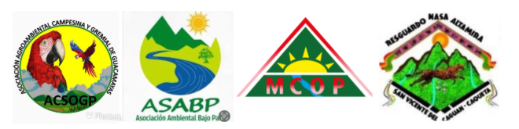

CAQUETÁ · HUILA · COLOMBIA
Visor territorial de la Comisión
3 capas activas
✳ Alterna capas para analizar su distribución y relación espacial. Las áreas reportadas corresponden a sus respectivas fuentes.
Coordenadas: —

Zona de Reserva Campesina Cuenca del Río Pato y Valle de Balsillas y Resguardo Altamira
Cartografía para el diálogo y la comprensión territorial